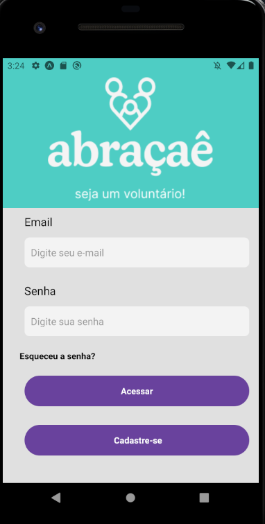

Habilidade com trabalho em grupo, sempre tomando iniciativa e com boa comunicação.
Tenho me dedicado nas linguagens React Native, TypeScript e Python.
A pricípio tenho mais trabalhos com front end dev utilizando essas skills mencionadas, mas também tenho interesse em back end.

Olá,
eu sou a Ludmila
Tenho trabalhado em escritório de contabilidade desde os meus 16 anos, como contadora sempre me dediquei em realizar relatórios e dashboards visando a perspectiva do cliente, na área em que atuo tenho aplicado automações tanto com VBA quanto Python, para agilizar o trabalho meu e dos meus colegas de trabalho. Assim como, me dedicado em demonstrar relatórios e dashboards na perspectiva do cliente, para melhor entendimento, aplicando teorias de UX design.
-
Projeto Pokedex - Digital Inovation ONE - Estudo
Projeto realizado em estudos de JavaScript pela DIO, demonstra informação sobre os personagens do Pokemon, através do consumo de uma API pública.
Código no GitHub aqui
-
Projeto AbracAê - Mais 1 Code - Estudo
Projeto em construção com o grupo de estudo da Mais 1 Code. Para conclusão do curso estamos realizando um projeto de aplicativo com o objetivo de ajuda comunitária para entrega de comida.
Código no GitHub aqui

- Português
- Inglês
-
Analista de operações jurídicas
agosto de 2019 até o momentoAnálise de decisões jurídicas no âmbito trabalhista, afim de confeccionar cálculos para gestão de risco financeira, ou até possibilidade de acordo entre as partes. Estruturação de relatórios afim de melhorar qualidade da equipe. Contribuição de squad utilizando metodologias ágeis, com equipe multidisciplinar com foco em reduzir custos, trâmites jurídicos, e realização de pesquisas buscando oportunidades de melhoria no procedimento.
-
Graduação em Tecnologia da Informação na UNIVESP
agosto de 2022 até o momentoRealizo graduação em Tecnologia da Informação na Universidade Virtual do Estado de São Paulo - uma universidade pública do estado.